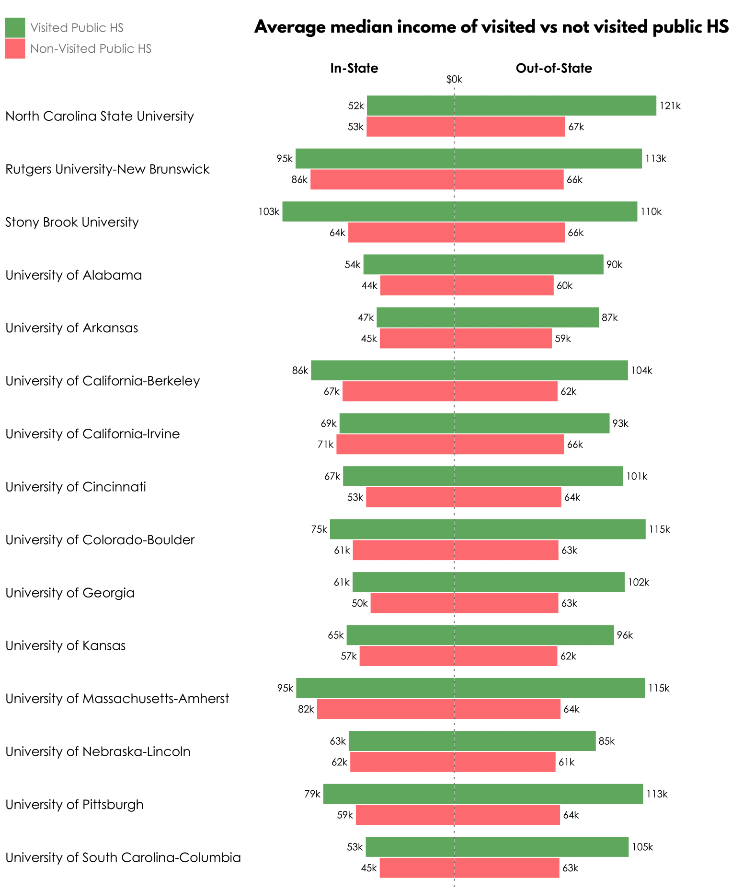
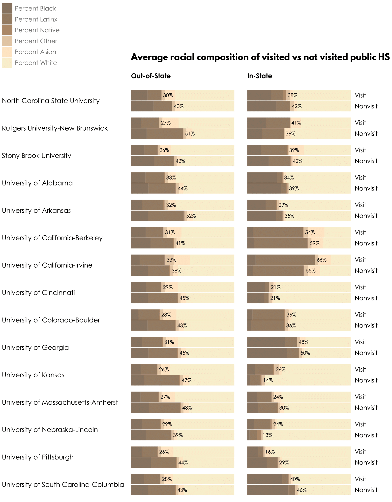

Socioeconomic and racial inequality in access to public research universities is a growing concern for scholars and policy advocates (Burd, 2018).
While policy debates about access to higher education often focus on student behavior, universities are purposeful about which students they pursue and expend substantial resources crafting their class. Understanding the relationship between university enrollment behaviors and access inequality requires a basic understanding of the “enrollment management” industry.
Enrollment management (EM) is a profession that integrates techniques from marketing and economics in order to “influence the characteristics and the size of enrolled student bodies” (Hossler & Bean, 1990, p. xiv). EM is also a university administrative structure (e.g., “The Office of Enrollment Management”) that coordinates the activities of offices responsible for admissions, financial aid, marketing, and recruiting.
CUT PARAGRAPH ON EM INDUSTRY; ADD PARAGRAPHS ON IRON TRIANGLE AND THE CAUSES/CONSEQUENCES OF NONRES ENROLLMENT GROWTH BY PUBLIC RESEARCH UNIVERSITIES
The broader enrollment management industry consists of professionals working within universities (e.g., admissions counselors), the associations enrollment management professionals belong to (e.g., National Association for College Admission Counseling), and the marketing/enrollment management consultancies universities hire (e.g., Hobsons, Ruffalo Noel Levitz).
Figure 1 depicts the “enrollment funnel,” a conceptual tool the EM industry uses to describe stages in student recruitment in order to inform targeted recruiting interventions. The vast majority of research on enrollment management focuses on the final stages of the enrollment funnel, specifically which applicants are admitted (e.g., Alon, 2009; Karabel, 2005; Karen, 1990; Posselt, 2016) and the use of financial aid “leveraging” to convert admits to enrollees (e.g., Doyle, 2010; McPherson & Schapiro, 1998; Waddell & Singell, 2011). By contrast, the enrollment management industry expends substantial resources on earlier stages in the funnel. “Prospects” are “all the potential students you would want to attract to your institution” (Campbell, 2017). “Inquiries” are prospects that contact the university, including those who respond to university solicitations (e.g., email, brochure) and those who reach out on their own (e.g., sending SAT/ACT scores to a university, completing a form on the admissions website).

Universities identify prospects primarily by purchasing “student lists” from College Board and ACT. For example, from 2010 to 2018, the University of Alabama paid $1.9 million to College Board and $349k to ACT, Inc (University of Alabama, 2019). Student lists contain contact details and background information (demographic, socioeconomic, and academic) about individual prospects. Universities control which prospects are included in the list by selecting on criteria such as zip code, race, and academic achievement. Noel-Levitz (2017) found that the median public university purchases about 64,000 names.
Once identified, prospects are targeted with recruiting interventions aimed at soliciting inquiries and applications (Clinedinst & Koranteng, 2017; Noel-Levitz, 2018). Face-to-face interventions include off-campus visits by universities admissions representatives (e.g., to a local high school) and on-campus visits by prospects. Non face-to-face interventions include email, mail (e.g., postcards, brochures), and texts. Additionally, universities utilize paid advertising (e.g., pay-per-click ads from Google, cookie-driven ads that target prospects who visit your website) and social media (e.g., Twitter, Instagram, YouTube) as a means of generating inquiries and creating positive “buzz” amongst prospects. Given the the rise in “stealth applicants” who do not inquire before applying (Dupaul & Harris, 2012), social media enables universities to tell their story to prospects who do not contact the university and do not wish to be contacted.
The “data science” revolution in market research has given birth to a niche industry of higher education enrollment management/marketing consulting firms. These firms help universities identify prospects (e.g., which criteria to select when purchasing student lists) and decide which prospects should receive which recruiting interventions. For example, from 2010 to 2018 the University of Alabama paid $4.4 million to the EM consulting firm Hobsons (University of Alabama, 2019) (2018 CPI). The consultancies integrate university-owned data (e.g., historical data on applicants, IP addresses that visit the university website), publicly available data, and proprietary data. As an example of proprietary data, one enrollment management consultantancy told us they know the houshold income, house value, and detailed expenditures (e.g., annual expenditure on hockey equipment) of every household in the US. Firms make recommendations by applying these data sources to analytic tools that predict application and enrollment probabilities for each prospect and also predict the effect of recruiting interventions on these probabilities.
Given our research focus on off-campus recruiting, what do we know about the role of off-campus visits in student recruitment? In the admissions world, “travel season” refers to the mad dash between Labor Day and Thanksgiving when admissions officers host hotel receptions, college fairs, and visit high schools across the country (Stevens, 2007). Noel-Levitz (2018) found that public universities spent 18% of their marketing and recruiting budget on “travel to high schools and college fairs,” compared to 15% for on-campus visits and 14% for student list purchases..1 Stevens (2007), who analyzed off-campus recruiting efforts at a selective, private liberal ars college, found that The College visited the same schools year after year because successful recruiting depends on long-term relationships with high schools. Further, the College tended to visit affluent schools, and private schools in particular, because these schools enroll high-achieving students who can afford tuition and because these schools have the resources and motivation to host a successful visit.
Analyses of the effects of off-campus recruiting broadly conceive off-campus recruiting as a means of simultaneously identifying prospects and connecting with prospects already being targeted through mail/email (e.g., Clinedinst & Koranteng, 2017; Noel-Levitz, 2016; Stevens, 2007). Noel-Levitz (2018) found that off-campus visits were the second highest source of inquiries (after student list purchases), accounting for 19.0% of inquiries for the median public university. Off-campus visits were also the third highest source of enrollees (after stealth applicants and on-campus visits), accounting for 16% of enrollees . Holland (2019), who analyzed recruiting from the perspective of high school students, found that high school visits influenced where students applied and where they enrolled, particularly first-generation students. By contrast, affluent students with college-educated parents tended to be less taken by overtures from universities and more concerned about university prestige. Finally, echoing findings from market research (Noel-Levitz, 2018), Stevens (2007) found that high school visits were instrumental for maintaining strong relationships with guidance counselors at “feeder schools.” These relationships were essential because “the College’s reputation and the quality of its applicant pool are dependent upon its connections with high schools nationwide” (Stevens, 2007, p. 53).
While prior research finds that off-campus recruiting influences the application and enrollment decisions of underrepresented students and accounts for a larger share of university marketing/recruiting budgets, our research is the first to systematically investigate which high schools receive visits by which universities.


Mainstream policy debates about college access
Alon, S. (2009). The evolution of class inequality in higher education: Competition, exclusion, and adaptation. American Sociological Review, 74(5), 731–755.
Burd, S. (2018). Undermining pell, volume iv: How the privatization of public higher education is hurting low-income students. New America. Retrieved from https://www.newamerica.org/education-policy/reports/undermining-pell-iv/
Campbell, A. (2017). Higher education marketing: How to master your admissions funnel. Retrieved from https://hop-online.com/blog/higher-education-marketing-admissions-process/
Clinedinst, M., & Koranteng, A.-M. (2017). 2017 state of college admission. National Association of College Admissions Officers.
Doyle, W. R. (2010). Changes in institutional aid, 1992-2003: The evolving role of merit aid. Research in Higher Education, 51(8), 789–810.
Dupaul, S., & Harris, M. S. (2012). Secret shoppers: The stealth applicant search for higher education. Journal of College Admission, (Spring 2012), 8–16. Journal Article.
Holland, M. M. (2019). Divergent paths to college: Race, class, and inequality in high schools. New Brunswick, NJ: Rutgers University Press.
Hossler, D., & Bean, J. P. (1990). The strategic management of college enrollments (pp. xxii, 330p.). San Francisco, CA: Jossey-Bass.
Karabel, J. (2005). The chosen: The hidden history of admission and exclusion at harvard, yale, and princeton (pp. viii, 711p., [16]p. of plates). Boston, MA: Houghton Mifflin Co.
Karen, D. (1990). Toward a political-organizational model of gatekeeping: The case of elite colleges. Sociology of Education, 63(4), 227–240.
McPherson, M. S., & Schapiro, M. O. (1998). The student aid game. Princeton, NJ: Princeton University Press.
Noel-Levitz, R. (2016). 2016 report: Cost of recruiting an undergraduate student for four-year and two-year institutions. Ruffalo Noel-Levitz. Retrieved from https://www.ruffalonl.com/papers-research-higher-education-fundraising/campus-organizational-strategy/benchmark-reports-higher-education
Noel-Levitz, R. (2017). 2017 marketing and student recruitment report of effective practices. Ruffalo Noel-Levitz. Retrieved from https://www.ruffalonl.com/papers-research-higher-education-fundraising/campus-organizational-strategy/benchmark-reports-higher-education
Noel-Levitz, R. (2018). 2018 marketing and student recruitment report of effective practices. Ruffalo Noel-Levitz. Retrieved from http://learn.ruffalonl.com/rs/395-EOG-977/images/RNL_2018_Student_Recruitment_Marketing_Report_EM-19.pdf
Posselt, J. R. (2016). Inside graduate admissions: Merit, diversity, and faculty gatekeeping (pp. x, 250pages). Cambridge, MA: Harvard University Press.
Stevens, M. L. (2007). Creating a class: College admissions and the education of elites (p. 308 p.). Cambridge, MA: Harvard University Press.
University of Alabama. (2019). Open records. Retrieved January 13, 2019, from http://open.ua.edu/
Waddell, G. R., & Singell, J., Larry D. (2011). Do no-loan policies change the matriculation patterns of low-income students? Economics of Education Review, 30(2), 203–214.
Only “traditional advertising” (e.g., billboards, newspapers, magazines, TV, radio) accounted for a higher percentage (24%)↩